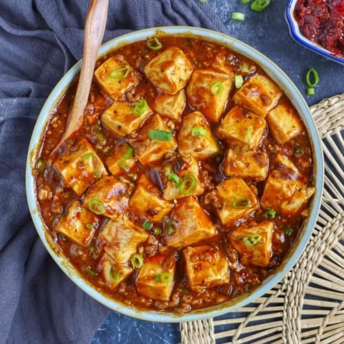

My Fav Recipe
Ingredients list
- 3 ounces ground pork
- 1 tablespoon chopped green onion
- 3 tablespoons water
- 1 box tofu
Seasonings list
- 2 tablespoons Lee Kum Kee Panda Oyster Sauce
- 2 tablespoons Lee Kum Kee Spicy Bean Sauce
- 1 tablespoon Lee Kum Kee Pure Sesame Oil
- A pinch of cornstarch
- 2 teaspoons Lee Kum Kee Garlic Mince
- 1 teaspoon Lee Kum Kee Ginger Mince
Steps needed to prepare the food
- Dice the tofu and heat it for later use.
- Add the minced ginger and garlic to a pan, add the minced pork and stir-fry until cooked.
- Add Lee Kum Kee Panda Brand Oyster Sauce and Lee Kum Kee Spicy Bean Sauce and stir-fry until well-mixed, then add water.
- Add the tofu and cook over low heat until the flavor is absorbed, thicken with starch and add Lee Kum Kee Pure Sesame Oil.
- Serve on a plate and sprinkle with chopped green onions.
- Tip: Adjust the amount of spicy bean sauce according to your personal tolerance for spiciness.
Images of MAPO TOFU
